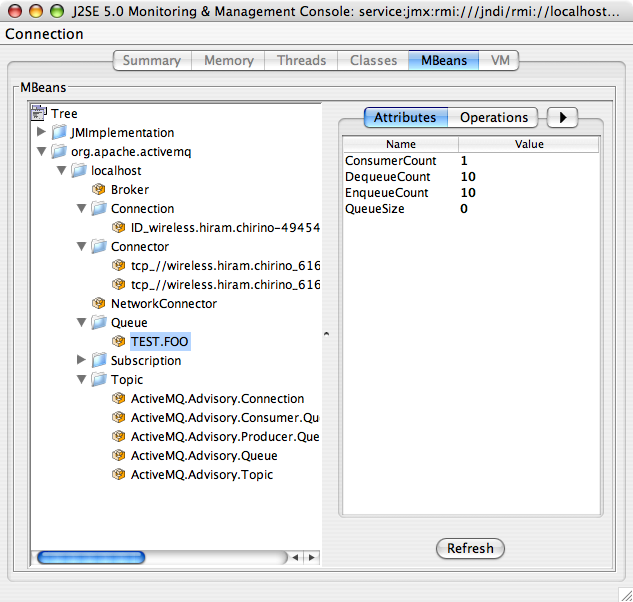

Apache ActiveMQ ™ -- JMX
JMX
Apache ActiveMQ has extensive support for JMX to allow you to monitor and control the behavior of the broker via the JMX MBeans.
Using JMX to monitor Apache ActiveMQ
You can enable/disable JMX support as follows...
1. Run a broker setting the broker property useJmx to true (enabled by default) i.e.
For xbean configuration
2. Run a JMX console
$ jconsole
3. The ActiveMQ broker should appear in the list of local connections, if you are running JConsole on the same host as ActiveMQ.
JMX remote access
Remote connections to JMX are not enabled by default in the activemq.xml for security reasons. Please refer to Java Management guide to configure the broker for remote management.
Using the Apache ActiveMQ version on OS X it appears as follows:

ActiveMQ MBeans Reference
For additional references provided below is a brief hierarchy of the mbeans and a listing of the properties, attributes, and operations of each mbeans.
Mbean Type
Properties / ObjectName
Attributes
Operations
Broker
- type=Broker
brokerName=
BrokerId
- TotalEnqueueCount
- TotalDequeueCount
- TotalConsumerCount
- TotalMessageCount
- TotalConnectionsCount
- TotalConsumerCount
- TotalProducerCount
- MemoryLimit
- MemoryPercentUsage
- StoreLimit
StorePercentUsage
start
- stop
- terminateJVM
- resetStatistics
gc
Destination
type=Broker
- brokerName=
- destinationType=Queue|Topic
destinationName=
AverageEnqueueTime
- ConsumerCount
- DequeueCount
- EnqueueCount
- ExpiredCount
- InFlightCount
- MemoryLimit
- MemoryPercentUsage
- Name
QueueSize (queues only)
browseMessages
- gc
- purge
resetStatistics
NetworkConnector
type=Broker
- brokerName=
- connector=networkConnectors
networkConnectorName=
Name
- Duplex
- DynamicOnly
- BridgeTempDestinations
- ConduitSubscriptions
- DecreaseNetworkConsumerPriority
- DispatchAsync
- DynamicOnly
- NetworkTTL
- Password
PrefetchSize
start
stop
Connector
type=Broker
- brokerName=
- connector=clientConnectors
ConnectorName=
StatisticsEnabled
start
- stop
- resetStatistics
- enableStatistics
- disableStatistics
connectionCount
Connection
type=Broker
- brokerName=
- connectionViewType=clientId
connectionName=
DispatchQueueSize
- Active
- Blocked
- Connected
- Slow
- Consumers
- Producers
- RemoteAddress
- UserName
ClientId
start
- stop
resetStatistics
PersistenceAdapter
type=Broker
- brokerName=
- Service=PersistenceAdapter
InstanceName=
Name
- Size
- Data
Transactions
Health
type=Broker
- brokerName=
Service=Health
CurrentStatus
health
Command line utilities are also available to let you monitor ActiveMQ. Refer to ActiveMQ Command Line Tools Reference for usage information.
JMX API is also exposed via REST management API
Password Protecting the JMX Connector
(For Java 1.5+)
1. Make sure JMX is enabled, but tell ActiveMQ not create its own connector so that it will use the default JVM JMX connector.
2. Create access and password files
conf/jmx.access:
# The "monitorRole" role has readonly access. # The "controlRole" role has readwrite access. monitorRole readonly controlRole readwrite
conf/jmx.password:
# The "monitorRole" role has password "abc123". # The "controlRole" role has password "abcd1234". monitorRole abc123 controlRole abcd1234
(Make sure both files are not world readable - more info can be find here to protect files)
For more details you can see the Monitoring Tomcat Document
3. Modify the "activemq" startup script (in bin) to enable the Java 1.5+ JMX connector
Find the "ACTIVEMQ_SUNJMX_START=" line and change it too the following: (note that in previous versions of ActiveMQ this property was called SUNJMX in some scripts. As of v5.12.0 all scripts use ACTIVEMQ_SUNJMX_START):
1. Windows
ACTIVEMQ_SUNJMX_START=-Dcom.sun.management.jmxremote.port=1616 -Dcom.sun.management.jmxremote.ssl=false \ -Dcom.sun.management.jmxremote.password.file=%ACTIVEMQ_BASE%/conf/jmx.password \ -Dcom.sun.management.jmxremote.access.file=%ACTIVEMQ_BASE%/conf/jmx.access
2. Unix
ACTIVEMQ_SUNJMX_START="-Dcom.sun.management.jmxremote.port=1616 -Dcom.sun.management.jmxremote.ssl=false \ -Dcom.sun.management.jmxremote.password.file=${ACTIVEMQ_BASE}/conf/jmx.password \ -Dcom.sun.management.jmxremote.access.file=${ACTIVEMQ_BASE}/conf/jmx.access"
This could be set in /etc/activemq.conf instead (if you have root access):
1. Windows
ACTIVEMQ_HOME=DRIVE_LETTER:/where/ActiveMQ/is/installed ACTIVEMQ_BASE=%ACTIVEMQ_HOME% ACTIVEMQ_SUNJMX_START=-Dcom.sun.management.jmxremote.port=1616 -Dcom.sun.management.jmxremote.ssl=false \ -Dcom.sun.management.jmxremote.password.file=%ACTIVEMQ_BASE%/conf/jmx.password \ -Dcom.sun.management.jmxremote.access.file=%ACTIVEMQ_BASE%/conf/jmx.access
2. Unix
ACTIVEMQ_HOME=DRIVE_LETTER:/where/ActiveMQ/is/installed ACTIVEMQ_BASE=${ACTIVEMQ_HOME} ACTIVEMQ_SUNJMX_START="-Dcom.sun.management.jmxremote.port=1616 -Dcom.sun.management.jmxremote.ssl=false \ -Dcom.sun.management.jmxremote.password.file=${ACTIVEMQ_BASE}/conf/jmx.password \ -Dcom.sun.management.jmxremote.access.file=${ACTIVEMQ_BASE}/conf/jmx.access"
4. Start ActiveMQ
You should be able to connect to JMX on the JMX URL
service:jmx:rmi:///jndi/rmi://
And you will be forced to login.
Selective MBean registration
In situations where you need to scale your broker to large number of connections, destinations and consumers it can become very expensive to keep JMX MBeans for all those objects. Instead of turning off JMX completely, starting with 5.12.0, you can selectively suppress registration of some types of MBeans and thus help your broker scale, while still having a basic view of the broker state.
For example, the following configuration will exclude all dynamic producers, consumers, connections and advisory topics from registering their MBeans
ManagementContext Properties Reference
Property Name
Default Value
Description
useMBeanServer
true
If true then it avoids creating a new MBean server if a MBeanServer has already been created in the JVM
jmxDomainName
org.apache.activemq
The jmx domain that all objects names will use
createMBeanServer
true
If we should create the MBeanServer is none is found.
createConnector
false
Please refer to Java Management guide to configure the server for remote management and lock down the endpoint serialisation with an appropriate jdk.serialFilter
connectorPort
1099
The port that the JMX connector will use
connectorHost
localhost
The host that the JMX connector and RMI server (if rmiServerPort>0) will use
rmiServerPort
0
The RMI server port, handy if port usage needs to be restricted behind a firewall
connectorPath
/jmxrmi
The path that JMX connector will be registered under
findTigerMBeanServer
true
Enables/disables the searching for the Java 5 platform MBeanServer
suppressMBean
List of MBean name patters to ignore